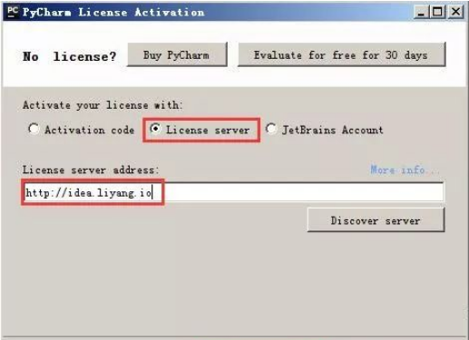

原文连接:https://www.cnblogs.com/changxin7/p/11354423.html
面系那个对象开发原则.高内聚.低耦合
软件设计中通常用耦合度和内聚度作为衡量模块独立程度的标准。划分摸块的一个准则就是高内聚低耦合。
这是软件工程中的概念,是判断设计好坏的标准，主要是面向OO的设计，主要是看类的内聚性是否高，偶合度是否低.
每一个类完成特定的独立的功能，这个就是高内聚。耦合就是类之间的互相调用关系，如果耦合很强，互相牵扯调用很多，那么会牵一发而动全身，不利于维护和扩展。
类之间的设置应该要低耦合,但是每个类应该要高内聚.耦合是类之间相互依赖的尺度.如果每个对象都有引用其它所有的对象,那么就有高耦合,这是不合乎要求的,因为在两个对象之间,潜在性地流动了太多信息.低耦合是合乎要求的:它意味着对象彼此之间更独立的工作.低耦合最小化了修改一个类而导致也要修改其它类的”连锁反应”. 内聚是一个类中变量与方法连接强度的尺度.高内聚是值得要的,因为它意味着类可以更好地执行一项工作.低内聚是不好的,因为它表明类中的元素之间很少相关.成分之间相互有关联的模块是合乎要求的.每个方法也应该高内聚.大多数的方法只执行一个功能.不要在方法中添加’额外’的指令,这样会导致方法执行更多的函数.
推广开来说，这个思想并不限于类与类之间的关系。模块和模块，子系统之间也都要遵守这个原则，才可以设计出延展性比较强的系统。
什么是耦合
定义
耦合性也称块间联系。指软件系统结构中各模块间相互联系紧密程度的一种度量。模块之间联系越紧密，其耦合性就越强，模块的独立性则越差。模块间耦合高低取决于模块间接口的复杂性、调用的方式及传递的信息。
耦合度就是某模块（类）与其它模块（类）之间的关联、感知和依赖的程度，是衡量代码独立性的一个指标，也是软件工程设计
及编码质量评价的一个标准。耦合的强度依赖于以下几个因素：
（1）一个模块对另一个模块的调用；
（2）一个模块向另一个模块传递的数据量；
（3）一个模块施加到另一个模块的控制的多少；
（4）模块之间接口的复杂程度。
耦合分类
耦合按从强到弱的顺序可分为以下几种类型：
a)非直接耦合：两模块间没有直接关系，之间的联系完全是通过主模块的控制和调用来实现的
b)数据耦合：指两个模块之间有调用关系，传递的是简单的数据值，相当于高级语言的值传递;
c)标记耦合：指两个模块之间传递的是数据结构，如高级语言中的数组名、记录名、文件名等这些名字即标记，其实传递的是这个数据结构的地址;
d)控制耦合：一指一个模块调用另一个模块时，传递的是控制变量（如开关、标志等），被调模块通过该控制变量的值有选择地执行块内某一功能;
e)外部耦合：一组模块都访问同一全局简单变量而不是同一全局数据结构，而且不是通过参数传递该全局变量的信息
f)公共耦合：一组模块都访问同一个公共数
据环境。该公共数据环境可以是全局数据结构、共享的通信区、内存的公共覆盖区等。
g)内容耦合：这是最高程度的耦合，也是最差的耦合。当一个模块直接使用另一个模块的内部数据，或通过非正常入口而转入另一个模块内部。
为什么要低耦合（解耦合）
在面向对象编程中，对象自身是内聚的，是保管好自己的数据，完成好自己的操作的，而对外界呈现出自己的状态和行为。但是，没有绝对的自力更生，对外开放也是必要的！一个对象，往往需要跟其他对象打交道，既包括获知其他对象的状态，也包括仰赖其他对象的行为，而一旦这样的事情发生时，我们便称该对象依赖于另一对象。只要两个对象之间存在一方依赖一方的关系，那么我们就称这两个对象之间存在耦合。 比如妈妈和baby，妈妈要随时关注baby的睡、醒、困、哭、尿等等状态，baby则要仰赖妈妈的喂奶、哄睡、换纸尿裤等行为，从程序的意义上说，二者互相依赖，因此也存在耦合。首先要说，耦合是必要的。
耦合的程度就是耦合度，也就是双方依赖的程度。上文所说的妈妈和baby就是强耦合。而你跟快递小哥之间则是弱耦合。一般来说耦合度过高并不是一件好事。就拿作为IT精英的你来说吧，上级随时敦促你的工作进度，新手频繁地需要你指导问题，隔三差五还需要参加酒局饭局，然后还要天天看领导的脸色、关注老婆的心情，然后你还要关注代码中的bug 、bug、bug，和需求的变化、变化、变化，都够焦头烂额了，还猝不及防的要关注眼睛、颈椎、前列腺和头发的状态，然后你再炒个股，这些加起来大概就是个强耦合了。从某种意义上来说，耦合天生就与自由为敌，无论是其他对象依赖于你，还是你依赖其他对象。比如有人嗜烟、酗酒，你有多依赖它们就有多不自由；比如有人家里生了七八个娃，还有年迈的父母、岳父母，他们有多依赖你，你就有多不自由。所以老子这样讲：“五音令人耳聋，五色令人目盲，驰骋狩猎令人心发狂，难得之货令人行妨。”卢梭也是不无悲凉的说“人生而自由，却又无往而不在枷锁中”。因此，要想自由，就必须要降低耦合，而这个过程就叫做解耦和。
耦合度很高的情况下，维护代码时修改一个地方会牵连到很多地方，如果修改时没有理清这些耦合关系，那么带来的后果
可能会是灾难性的，特别是对于需求变化较多以及多人协作开发维护的项目，修改一个地方会引起本来已经运行稳定的模块错误，严重时会导致恶性循环，问题永远改不完，开发和测试都在各种问题之间奔波劳累，最后导致项目延期，用户满意度降低，成本也增加了，这对用户和开发商影响都是很恶劣的，各种风险也就不言而喻了。
如何降低耦合（解耦合）
- 少使用类的继承，多用接口隐藏实现的细节。 Java面向对象编程引入接口除了支持多态外， 隐藏实现细节也是其中一个目的。
- 模块的功能化分尽可能的单一，道理也很简单，功能单一的模块供其它模块调用的机会就少。（其实这是高内聚的一种说法，高内聚低耦合一般同时出现，为了限制篇幅，我们将在以后的版期中讨论）。
- 遵循一个定义只在一个地方出现。
- 少使用全局变量。
- 类属性和方法的声明少用public，多用private关键字，
- 多用设计模式，比如采用MVC的设计模式就可以降低界面与业务逻辑的耦合度。
- 尽量不用“硬编码”的方式写程序，同时也尽量避免直接用SQL语句操作数据库。
- 最后当然就是避免直接操作或调用其它模块或类（内容耦合）；如果模块间必须存在耦合，原则上尽量使用数据耦合，少用控制耦合，
限制公共耦合的范围，避免使用内容耦合。
什么是内聚
内聚，通俗的来讲，就是自己的东西自己保管，自己的事情自己做。每个模块尽可能独立完成自己的功能，不依赖于模块外部的代码。
对象是什么？对象就是保管好自己的东西，做好自己的事情的程序模块——这就是内聚！当然，对象的内聚只是内聚的一个层次，在不同的尺度下其实都有内聚的要求，比如方法也要讲内聚，架构也要讲内聚。
内聚： 内聚性又称块内联系。指模块的功能强度的度量，即一个模块内部各个元素彼此结合的紧密程度的度量。若一个模块内各元素（语名之间、程序段之间）联系的越紧密，则它的内聚性就越高。
高内聚:类与类之间的关系而定，高，意思是他们之间的关系要简单，明了，不要有很强的关系，不然，运行起来就会出问题。一个类的运行影响到其他的类。由于高内聚具备鲁棒性，可靠性，可重用性，可读性等优点，模块设计推荐采用高内聚。
内聚度是指内部各元素之间联系的紧密程度，模块的内聚种类通常可分为7种，按其内聚度从低
到高的次序依此为：偶然内聚、逻辑内聚、瞬时内聚、过程内聚、通信内聚、顺序内聚、功能内聚。
1 偶然内聚: 指一个模块内的各处理元素之间没有任何联系。
2 逻辑内聚: 指模块内执行几个逻辑上相似的功能，通过参数确定该模块完成哪一个功能。
3 时间内聚: 把需要同时执行的动作组合在一起形成的模块为时间内聚模块。
4 通信内聚: 指模块内所有处理元素都在同一个数据结构上操作（有时称之为信息内聚），或者指各处理使用相同的输入数据或者产生相同的输出数据。
5 顺序内聚: 指一个模块中各个处理元素都密切相关于同一功能且必须顺序执行，前一功能元素输出就是下一功能元素的输入。
6 功能内聚: 这是最强的内聚，指模块内所有元素共同完成一个功能，缺一不可。与其他模块的耦合是最弱的。
例子：
有个例子很容易明白：一个程序有50个函数，这个程序执行得非常好；然而一旦你修改其中一个函数，其他49个函数都需要做修改，这就是高耦合的后果。
一旦你理解了它，你编写概要设计的时候设计类或者模块自然会考虑到“高内聚，低耦合”。
可能也可以这样理解：
高内聚相对的是方法的独立性，减少外部（全局参数）的影响。低耦合相对的是方法的依赖性低，可用搭积木的方式构建程序。内聚类似积木，耦合类似盖房子，而高内聚低耦合的方式是比较效率并个性化构建房屋的方式。
Python安装详细教程
以windows版本举例：
1、首先去Pycharm官网，或者直接输入网址：http://www.jetbrains.com/pycharm/download/#section=windows，下载PyCharm安装包，根据自己电脑的操作系统进行选择，对于windows系统选择下图的框框所包含的安装包。
2,双击下载的安装包，进行安装，然后会弹出界面：
3，选择安装目录，Pycharm需要的内存较多，建议将其安装在D盘或者E盘，不建议放在系统盘C盘：
4，点击Next，进入下图的界面：
Create Desktop Shortcut创建桌面快捷方式，一个32位，一个64位，小编的电脑是64位系统，所以选择64位。
勾选Create Associations是否关联文件，选择以后打开.py文件就会用PyCharm打开。
5，点击Next，进入下图（默认安装即可）：
6，耐心的等待两分钟左右，如下图：
7，之后就会得到下面的安装完成的界面：
8，选择Accept，进入下一步：
9，进入激活界面，选择第二个License server，如下图所示：

之后在License server address中随意输入下面两个注册码中的任意一个即可，Pycharm新注册码1：http://idea.liyang.io或pycharm新注册码2：http://xidea.online，之后点击OK，便可以激活Pycharm了。
如果还不行，那么点击图片中的，复制粘贴以下验证码：
 View Code
View Code
10，Pycharm激活后：
激活之后会自动跳转到下图界面，选择IDE主题与编辑区主题：
11，可以选择主题风格：
12，之后进入界面：
13，创建py文件：
14，最终书写代码并运行：
print输出带颜色的方法
书写格式： 开头部分：\033[显示方式;前景色;背景色m + 结尾部分：\033[0m
注意：开头部分的三个参数：显示方式，前景色，背景色是可选参数，可以只写其中的某一个；另外由于表示三个参数不同含义的数值都是唯一的没有重复的，所以三个参数的书写先后顺序没有固定要求，系统都能识别；但是，建议按照默认的格式规范书写。
对于结尾部分，其实也可以省略，但是为了书写规范，建议\033[***开头，\033[0m结尾。
-------------------------------------------
-------------------------------------------
字体色 | 背景色 | 颜色描述
-------------------------------------------
30 | 40 | 黑色
31 | 41 | 红色
32 | 42 | 绿色
33 | 43 | 黃色
34 | 44 | 蓝色
35 | 45 | 紫红色
36 | 46 | 青蓝色
37 | 47 | 白色
-------------------------------------------
-------------------------------
显示方式 | 效果
-------------------------------
0 | 终端默认设置
1 | 高亮显示
4 | 使用下划线
5 | 闪烁
7 | 反白显示
8 | 不可见
-------------------------------数值表示的参数含义：
显示方式: 0（默认值）、1（高亮）、22（非粗体）、4（下划线）、24（非下划线）、 5（闪烁）、25（非闪烁）、7（反显）、27（非反显）
前景色: 30（黑色）、31（红色）、32（绿色）、 33（黄色）、34（蓝色）、35（洋 红）、36（青色）、37（白色）
背景色: 40（黑色）、41（红色）、42（绿色）、 43（黄色）、44（蓝色）、45（洋 红）、46（青色）、47（白色）
常见开头格式：
\033[0m 默认字体正常显示，不高亮
\033[32;0m 红色字体正常显示
\033[1;32;40m 显示方式: 高亮 字体前景色：绿色 背景色：黑色
\033[0;31;46m 显示方式: 正常 字体前景色：红色 背景色：青色
举例说明：
1，
print('\033[1;35;0m字体变色，但无背景色 \033[0m') # 有高亮 或者 print('\033[1;35m字体有色，但无背景色 \033[0m')
print('\033[1;45m 字体不变色，有背景色 \033[0m') # 有高亮
print('\033[1;35;46m 字体有色，且有背景色 \033[0m') # 有高亮
print('\033[0;35;46m 字体有色，且有背景色 \033[0m') # 无高亮结果：
2，
print('\033[0;36m床前明月光，')
print('疑是地上霜。')
print('举头望明月，')
print('低头思故乡。\033[0m')结果：